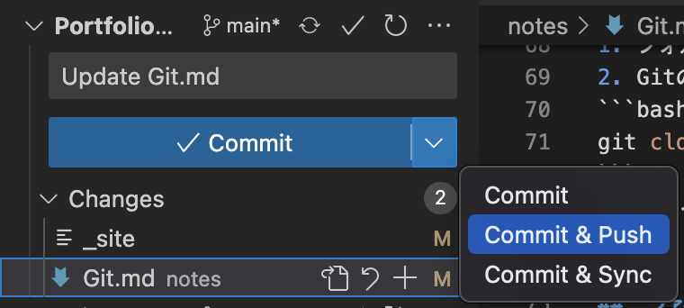

Jun 20, 2022 (Updated: Mar 27, 2023)
Memo, Git,
Git操作で役に立ちそうな個人的メモです。
git fetch origin main
git reset --hard origin/main
コミットのIDを取得する
git reset --hard <コミットID>
git push -f origin main
以下のgit.shを.gitと同階層に置いた上で実行
コミットメッセージがUpdateで良い場合
$ bash git.sh
コミットメッセージを指定する場合
$ bash git.sh <commit message>
ファイルに実行権限を与える
$ chmod +x git.sh
以後は以下のコメントのみで実行できる
$ ./git.sh
コミットメッセージを指定する場合は
$ ./git.sh <commit message>
git clone <GitリポジトリのURL>
変更点は緑色で表示され、変更したファイルは黄色で表示される
